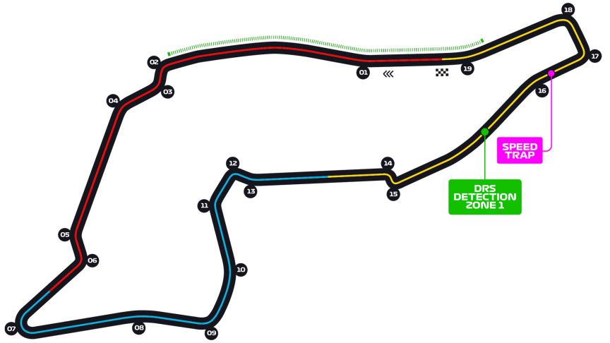

Grand Prix d'Emilie Romagne
Informations
Nom du circuit
Autodromo Enzo e Dino Ferrari
Lieu
Imola (Italie)
Nombre de tours
63
Longueur du circuit
4.909 km
Distance de course
309.049 km
Dernier vainqueur
Max Verstappen
Classement nombres de victoires sur ce circuit
7 victoires - Michael Schumacher
3 victoires - Alain Prost
3 victoires - Ayrton Senna
Le saviez-vous ?
Anciennement le Grand Prix de Saint-Marin, l'édition de 1994 a malheureusement été particulièrement marquante pour le monde de la Formule 1. En effet lors de ce dramatique week-end les pilotes Roland Ratzenberger et Ayrton Senna ont perdu la vie lors d'accidents. Suite à cela, de nombreuses améliorations ont vu le jour sur les circuits du monde entier.
C'était un circuit particulièrement apprécié par le pilote allemand Michael Schumacher, en témoigne ces 7 victoires sur ce circuit.
Après 14 ans d'absence au calendrier de la Formule 1, le circuit a fait son retour lors de la saison 2020 sous l'appelation Grand Prix d'Emilie Romagne.